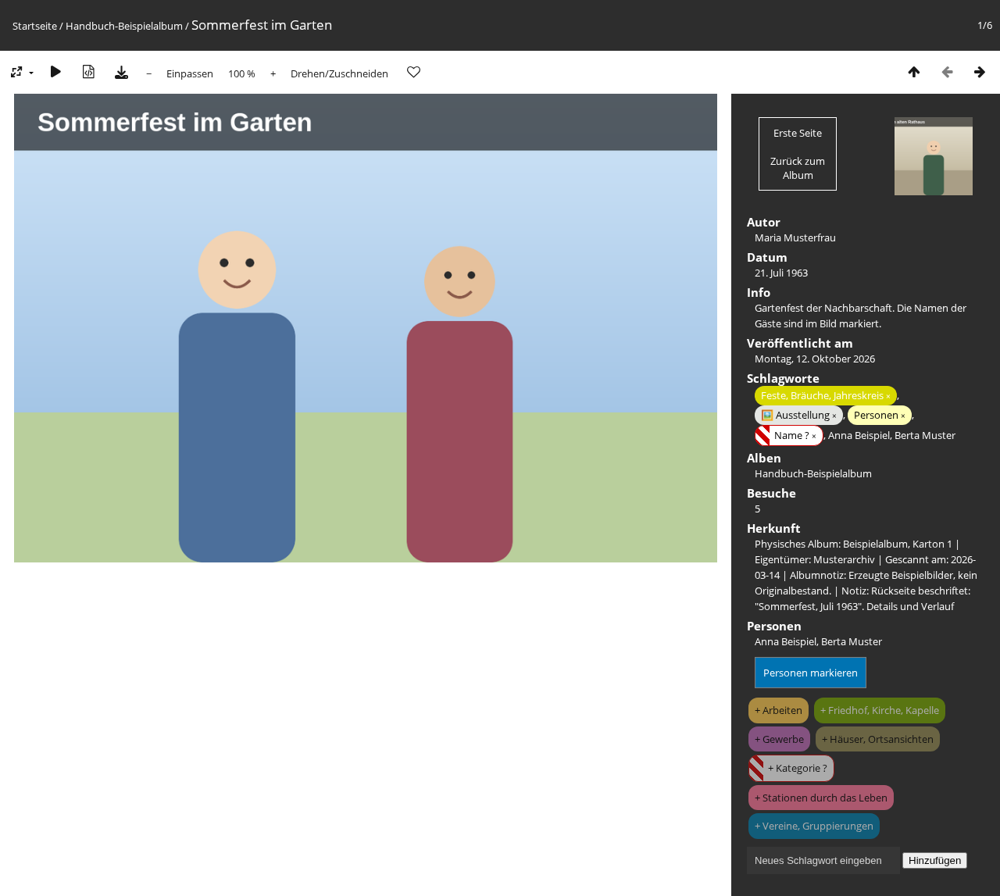

Die Fotoseite zeigt ein einzelnes Foto; was hier steht, gilt für jeden Besucher dieser Seite.

Die Fotoseite zeigt jedes Foto zunächst so groß, wie es in die Fläche links neben den Angaben passt. Kleine Fotos werden dafür vergrößert und wirken dann etwas unscharf. In der Leiste über dem Foto stehen dafür vier Schaltflächen:
Dasselbe geht mit den Tasten +, - und 0 (Einpassen) sowie mit gedrückter Strg-Taste (auf dem Mac Cmd) und dem Mausrad über dem Foto. Ein vergrößertes Foto lässt sich mit gedrückter Maustaste, mit dem Mausrad oder mit den Bildlaufleisten verschieben.
Im eingepassten Foto führt ein Klick je nach Stelle zum vorigen Foto, zum Album oder zum nächsten Foto. Solange das Foto vergrößert ist, passiert bei einem Klick nichts davon. Die Vergrößerung wird nicht gemerkt: jedes Foto öffnet sich wieder eingepasst.
Auf einem Tablet oder Smartphone und in einem schmalen Browserfenster gibt es nur Einpassen und 100 %. Auf Tablet und Smartphone wird das Foto wie gewohnt mit zwei Fingern vergrößert.